{kind=link}

|
Tehnhle manuál tinyurl.com/ffbmcz |
|
Je obrazovka černá? Pouze se šetří, dotkni se jí a měl by si vidět ovládání stěny
|
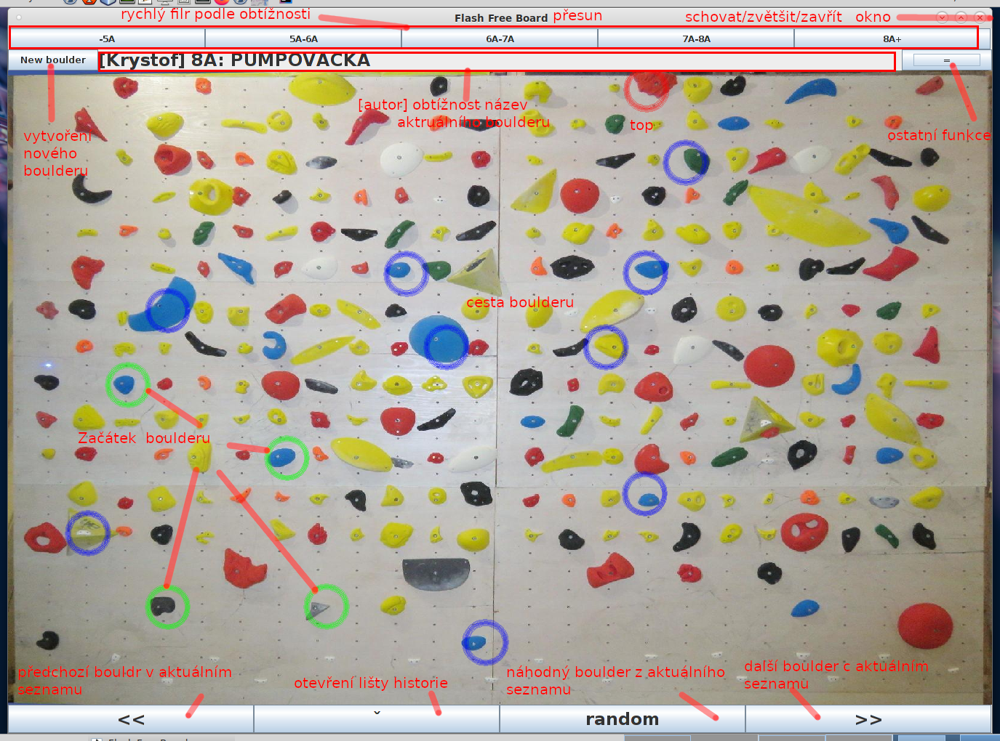 |
Základní použití je přijít, pomocný "rychlého filtru" si zvolit svoji obtížnost a pomocí "předchozího/dalšího boulderu" tedy šipek << a >>si proklikávat bouldery. Autor, obtížnost a název jsou vždy vidět pod rychlým filtrem. Při kliku na název se vám zobrazí detaily, včetně převodů obtížnosti. Ale Free board toho umí mnohem více.
Samozřejmě někdo musí do databáze této stěny bouldery přidávat. A protože lidí kteří dělají nové bouldery je málo, jejich čas je šetřen tím, že tlačítko na nový boulder je vlevo nahoře. O samotné tvorbě nového boulderu později.
Pokud jsou u monitoru repráčky, můžete si přinést vlastní flash disk (občas to vezme i telefon) a pustit si k lezení svoji muziku. Buďte ohleduplní, a nezneužívejte to k vyhnání ostatních lezců ze stěny.
Jakmile si pomocí "rychlého filtru" 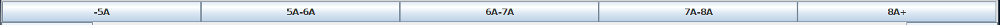 nastavíte obtížnost, zobrazí se nejnovější boulder dané obtížnosti a můžete zkoušet. Pomocí "předchozího/dalšího boulderu" tedy šipek << a >>si můžete proklikávat obsah filtrovaných problémů. Tlačítko random/náhoda skočí na náhodný boulder v aktuálním seznamu. Tlačítko ˇ/^ otevře/schová lištu navigace v historii.
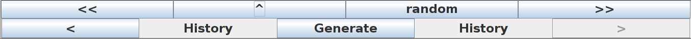Historie ignoruje současný filtr a lze se skrze ni doklikat do boulderů z předchozích filtrů. Funguje to stejně jako historie v prohlížeči. Tlačítko Generovat vygeneruje náhodný boulder. Lezitelnost tohoto boulderu není zaručena! Ale občas je s nimi pořádná junda. Tyto bouldry lze uložit na disk, ale je to dřina :). Primárně zůstávají pouze v historii. Pokud chcete historii z nějakého důvodu vymazat, pak prostě aplikaci zavřete (tím křížkem vpravo nahoře). Objeví se znova, ale bez historie
Pravé tlačítko myši/nebo ctrl+click na tlačítka navigace << , >> , < , > zobrazí menu pro přímý skok:
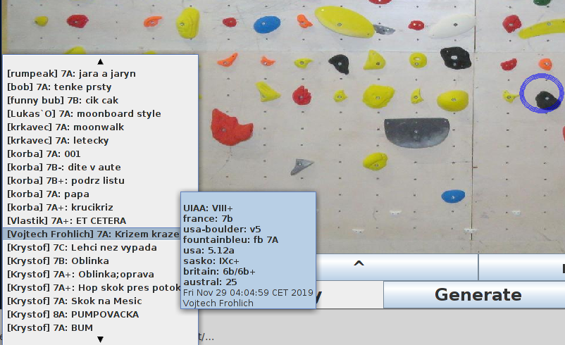
Jelikož tento list může být vlemi dlouhý, dá se v něm skrolovat polechtáním šipek nahoře/dole
Přes dva kliky skrze menu ostatních funkcí a zvolení "vybrat/listovat bouldery" vyskočí strašidelný dialog který umožní přesně najít boulder. Zobrazení dialogu vždy chvíli trvá, neboť se kontroluje centrální databáze stěny, aby byl k dispozic vždy poslední seznam:
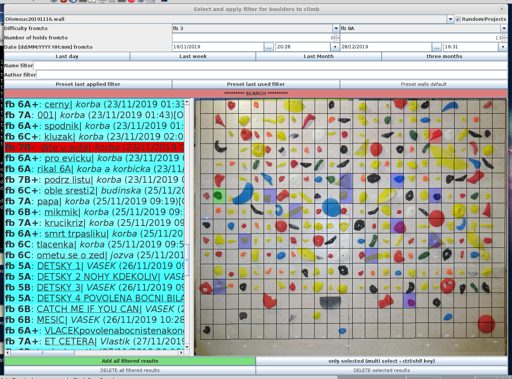
Okno se vždy zobrazí o velikosti stěny a na pozici toho kdo jej vyvolal. To aby se lépe orientovalo v dvoj-okenním módu pro dva lezce.
Klikneš li na text "... autory", zobrazí se ti seznam autorů. Zatím jen informativní
Po tom, co jste s filtrováním/výběrem spokojeni, je třeba zmáčknout nazelenalé Lézt filtrované bouldery - tedy všechny namodralé a červené položky v seznamu. Filtrování se zavře, a budete moci lézt vybranou skupinu boulderů. Pokud jsi nějaký boulder i vybral (byl vidět v náhledu a jeho text svítil červeně), bude tento boulder vybrán. Pokud jsi použil multiselect a chceš lízt pouze těch pár manuálně vybraných boulderů (nebo dokonce ten jeden jedinný, pracně nalezený, a nenechat se rušit jinými), je třeba zmáčknout šedo-modrý Lézt pouze vybrané bouldery - tedy ty červené položky v seznamu. 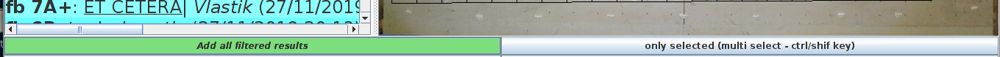
I když je volba datumu a času velmi přímočará 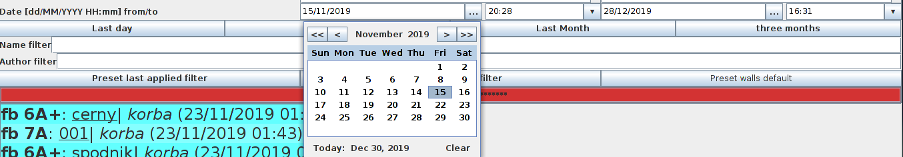 Jsou pro vás nachystané rychlo výběry:
Nastavení plnohodnotného filtru je dřina. Proto si aplikace pamatuje poslední filtry: Poslední aplikovaný - tedy kdy jste naposledy klikli načervenalé HLEDAT, a poslední použitý, tedy kdy jste stiskli nazelenalé Lézt filtrované bouldery nebo šedo-modrý Lézt pouze vybrané bouldery. Okno výběru boulderu je vždy nastartováno s maximálním možným rozsahem. Toto se dá obnovit pomocí nastavit na vše dané stěny
Pozor, historie filtrů se sdílí mezi okny paralelně lezoucích lezců! Ale zase přetrvá zavření aplikace.
Přes dva kliky skrze menu ostatních funkcí a zvolení "tréninky" nebo "hry! vyskočí podmenu s výběrem konkrétního úkolu. Úmyslně je uvádím zároveň, neboť hry jsou zatím prakticky všechny vytrvalostního charakteru
Poněkud kryptické okno po tobě chce nastavit čas na jeden boulder a kolik toho cheš lízt. Pak klikni start a běž lízt. Na základě tvého aktuálně vyfiltrovaného seznamu ti trénink střídá po tebou zvoleném časovém intervalu bouldery. Zaškrkávátka náhodný/klasický/přeskakování lze měnit za běhu. Náhodné bouldery jsou občas nasírací, tak si je radši nezapínejte, ale zase to umí dobře okořenit. Samozřejmě pokud budete mít vyfiltorvaný jeden nebo žádný boulder, tak se vám ty náhodné budou hodit.
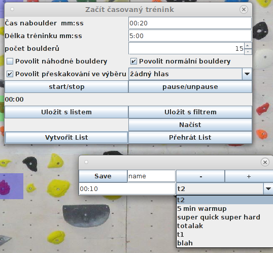Pokud jsou připojené repráčky, můžete zapnout, aby vám byl boulder přečtený - autor, klasa, jméno.
Váš oblíbený trénink si můžete uložit, a to buď s filtrem, nebo s výčtem boulderů, které jsou zrovna nastaveny:
Aplikace umí vytvářet i složitější tréninkové plány - warmup na rychlých lehkých bouldrech, pak pár těžkých... Toho se docílí ve dvou krocích.
Jelikož se to zatím - kvůli obtížnosti vytvoření - moc nepoužívá, tak tam mohou být chybky.
Umožňuje rozsvítit určené sloupce/řady.. no a pak si s nimi dělej co chceš:)
Pokud nastavíš, dá po určité době zvukový a zrakový signál, že čas vypršel.
Tenhle trénink simuluje špatně čitelnou skálu. Začínáš lézt, aniž by jsi znal celý boulder. Nastav si rychlost zobrazování, a hurá do toho! Nefunguje úplně v cajku pro traverzy... zatím. Jakmile je boulder plně zobrazen, zabliká.
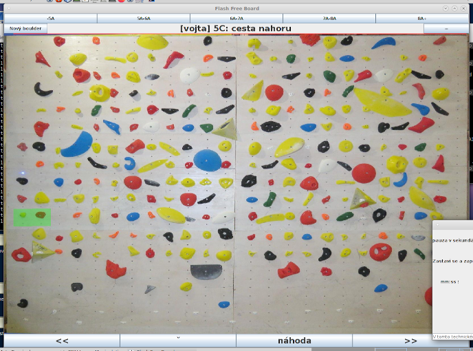 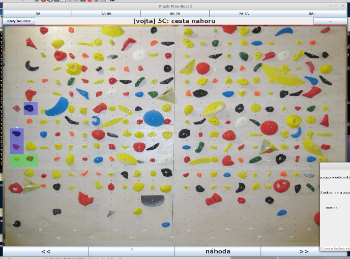 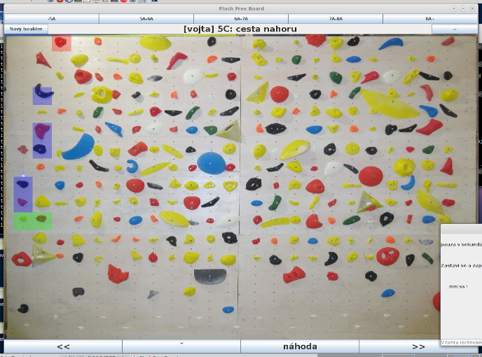Pokud nastavíš, dá po určité době zvukový a zrakový signál, že čas vypršel.
Základní vytrvalostní trénink - sleduješ pomalu se valící balón po stěně. Můžeš nastavit jeho rychlost a velikost a nejdelší možný skok.
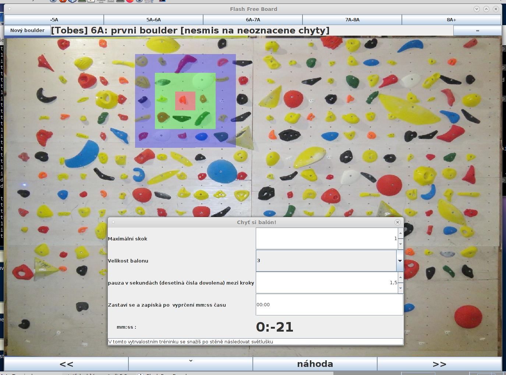Pokud nastavíš, dá po určité době zvukový a zrakový signál, že čas vypršel.
Sofistikovaný vytrvalostní trénink - nastavíš, ze kterých stran tě má stěna omezovat
A snažíš se lézt tak, abys byl vždy uvnitř boxu. Hodí se střídat s druhým lezcem, neboť se vyplatí hlášení, že tě to začalo honit z jiné strany.
Pokud nastavíš, dá po určité době zvukový a zrakový signál, že čas vypršel.
Sofistikovaný vytrvalostní trénink pro několik lidí zároveň. Všichni cyklí po stěně, a každý musí zůstat ve svém kvadrantu. Koho lajna sejme, ten jde z kola ven. Nastavte si
Pokud nastavíš, dá po určité době zvukový a zrakový signál, že čas vypršel.
Aplikace umožňuje zobrazení více boulderů zároveň. Každý lezec má pak své okno, kde si filtruje, leze, hraje nebo vytváří boulder. Omezení je samozřejmě velikostí stěny a velikostí monitoru. Proto je to v Olomouci omezeno na dvě paralelní skupiny. Jednoduše v menu klikni na další okno a hurá do toho. Na počátku jsou okna identická, ale dále sdílejí již jen historii filtrů a samozřejmě stěnu.
Snažte si vybírat bouldery tak, aby se nekřížili. Společné chyty jsou bílé. Bouldery druhého okna jsou zobrazeny v inverzních barvách, takže si cesty poznáte.
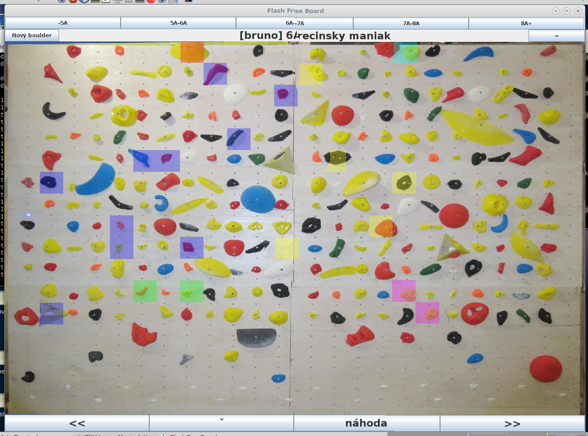
Na koláži výše vidíte klasický zeleno-modro-červený boulder zobrazený spolu s fialovo-žluto-vyblitým. Tedy přesně to co uvidíte na stěně, pokud budou dvě okna, každé s daným boulderem.
Vedle drobností co jsou opravdu pro specifické případy, jako nápověda, web, nastavení, deautorizace a logy, se zde nachází několik potenciálně užitečných věcí
Klikněte na tlačítko nový boulder, dvojitým ťuknutím nastavte počáteční chyty(/stupy), jednotlivými ťuky nastavte cestu boulderu. Pokud chcete top na hraně, jste hotoví. Pokud má boulder top(y) nastavte jej třemi ťuky na stejný chyt. Čtvrtý ťuk zruší označení špatně označeného chytu.
Okno můžete mít otevřené jak dlouho chcete. Hlavně ať je boulder kvalitní. Pokud zjistíte že boulder nechcete dodělat, zavřete křížkem nebo klikněte zpět. Tímto bude boulder nenávratně ztracen!
Jakmile jste hotoví, nastavte vaše jméno/přezdívku jako autora boulderu, nastavte jeho jméno, a zvolte jeho obtížnost. Aplikace vás nenechá uložit nevyplněný boulder.
Jelikož bouldery mají mít jistou kvality, na konci se vás ještě zeptáme, jestli jste příčetní - vaším úkolem je zadat dnešní datum ve formátu DDMMYY, a může to začínat nulou. Datum by mělo svít pro jednodušší opis vlevo dole na monitoru. Za toto se vám omlouváme, ale i tak se v databázi objevují nesmysly.
Pokud z nějakého důvodu nechcete boulder ukládat, odškrtněte box vpravo nahoře - uložit po skončení. Takto dokončený boulder nebude nikly uložen, ani nalezitelný přes filtrování. Bude pouze v historii. Hodí se na experimentování a různé ptákoviny.
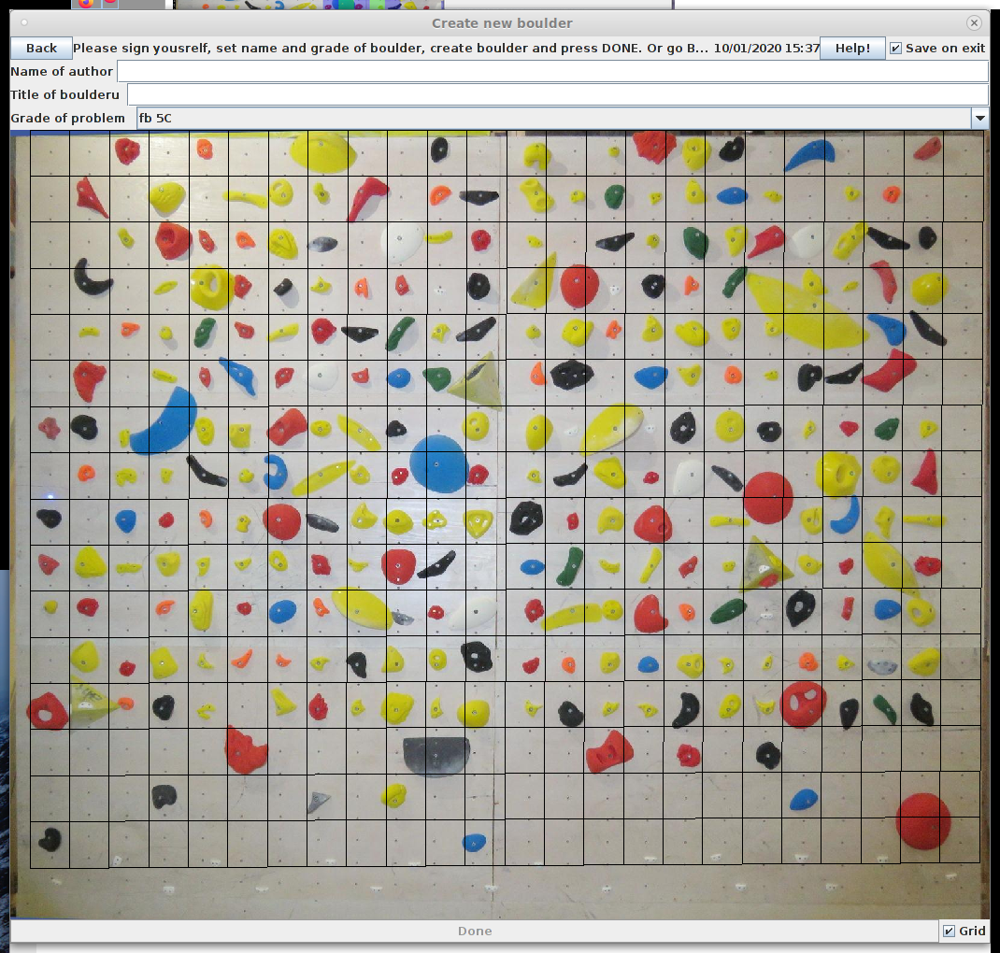